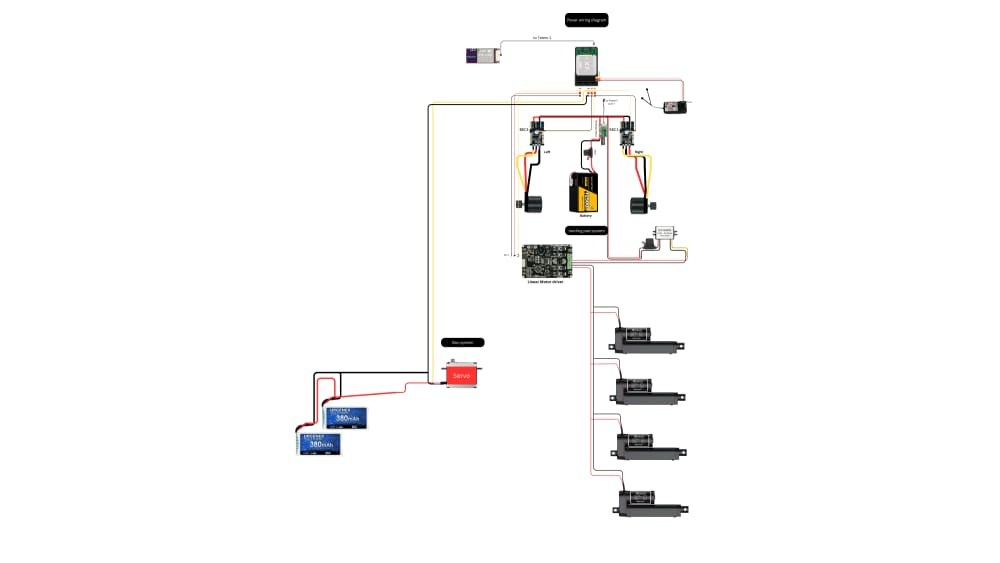
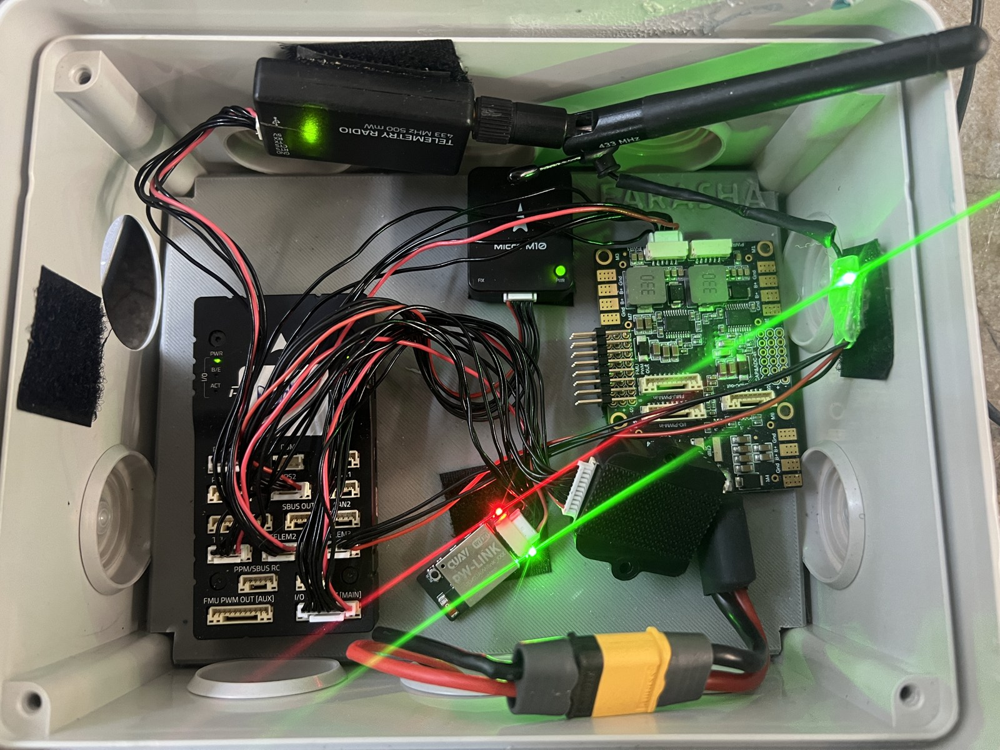

VTOL & fixed-wing aircraft
Airframe development, avionics integration and flight-control work across QuadPlane, tiltrotor and fixed-wing platforms.
Explore the work →Engineering portfolio
UAV & Avionics Systems Engineer
I design, integrate and troubleshoot uncrewed systems, from aircraft and ground robots to surface vessels. My work connects avionics, embedded electronics and practical engineering design.

I work across aircraft, ground robotics and marine systems, connecting airframe and electrical design with autopilot integration, diagnostics and practical test support.
Aircraft, ground robotics, marine systems and avionics. Design, modeling, integration and test work are presented together within each platform portfolio.
Airframe development, avionics integration and flight-control work across QuadPlane, tiltrotor and fixed-wing platforms.
Explore the work →
Aircraft assembly, component selection, autopilot configuration and stability investigations, from FPV quadcopters to heavy-lift platforms.
Explore the work →
Rover motor-control integration and a docking subsystem linking an aircraft with a ground platform.
Explore the work →
Marine electrical architecture, steering and propulsion interfaces, navigation electronics and system planning.
Explore the work →
Companion-computer interfaces, payload video, engineering design review and vision-based landing architecture.
Explore the work →Edited public excerpts from client reports, showing the analysis behind the configuration and diagnostic work.


Hassan II University of Casablanca · Bac+5
Université Sidi Mohamed Ben Abdellah
FARASHA SYSTEMS
FARASHA SYSTEMS
Upwork, Fiverr and direct clients
Reviewed Pixhawk 6C / ArduPlane configuration, motor and servo assignments, compass and airspeed interfaces, calibration and failsafes. Analysed supplied flight logs and recordings, attitude response, vibration, clipping and FFT spectra, then documented filter and PID-tuning recommendations. Provided live field-test support through calls with the on-site team, helping interpret behaviour and agree on configuration changes and next checks.
Reviewed swashplate/servo mapping, governor/RPM, motor interlock, failsafes, yaw and power-bus data. Analysed vibration/notch filtering, external INS / EKF3 and rangefinder configuration.
Integrated ESC, battery/BMS and propulsion interfaces. Investigated inrush current and worked on pre-charge and main-contactor integration.
Flight controls: ArduPilot, PX4, Pixhawk, Cube, CUAV, Mission Planner, MAVLink, GNSS/RTK and flight-log analysis.
Embedded & interfaces: C/C++, Python, Linux, Jetson, Raspberry Pi, DroneCAN, UART and Ethernet.
Engineering: Electrical integration, CAD and CNC preparation, interface review, BOM planning and technical documentation.
Design: Photoshop for photo editing and Illustrator for vector graphics.
Languages: Arabic native, English and French fluent, German basic.